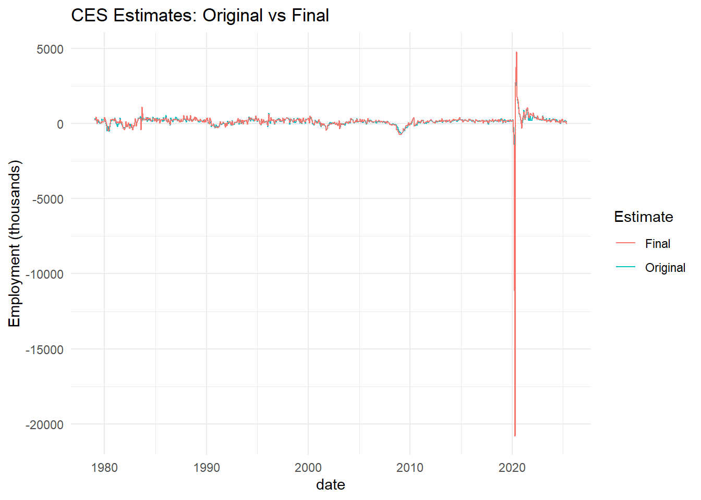
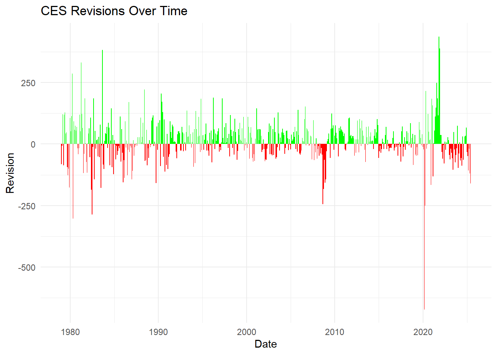
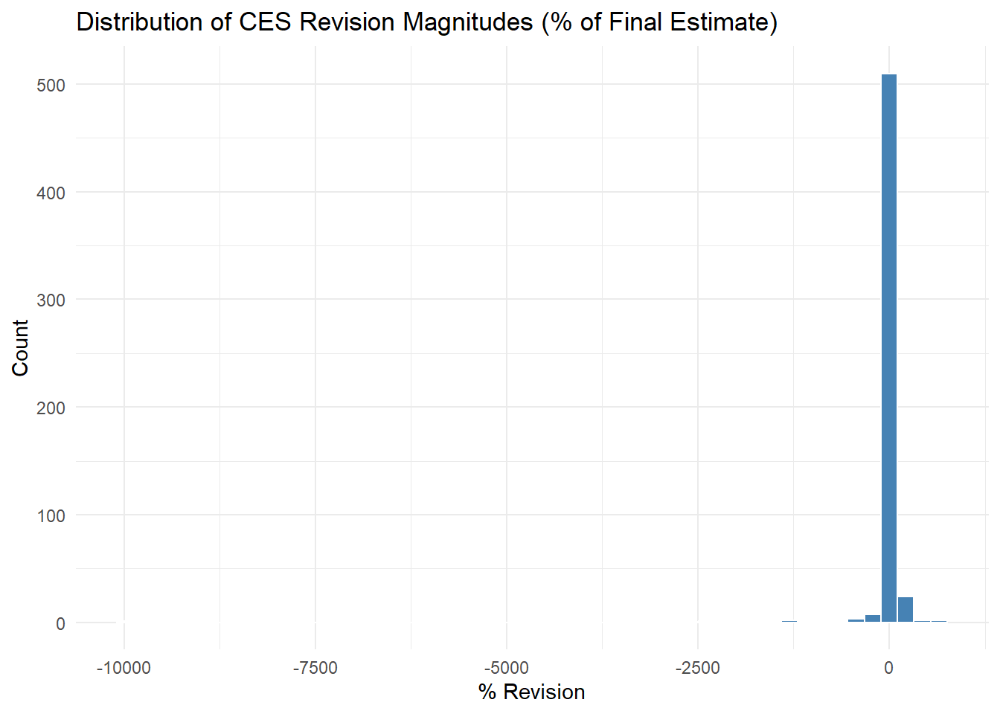
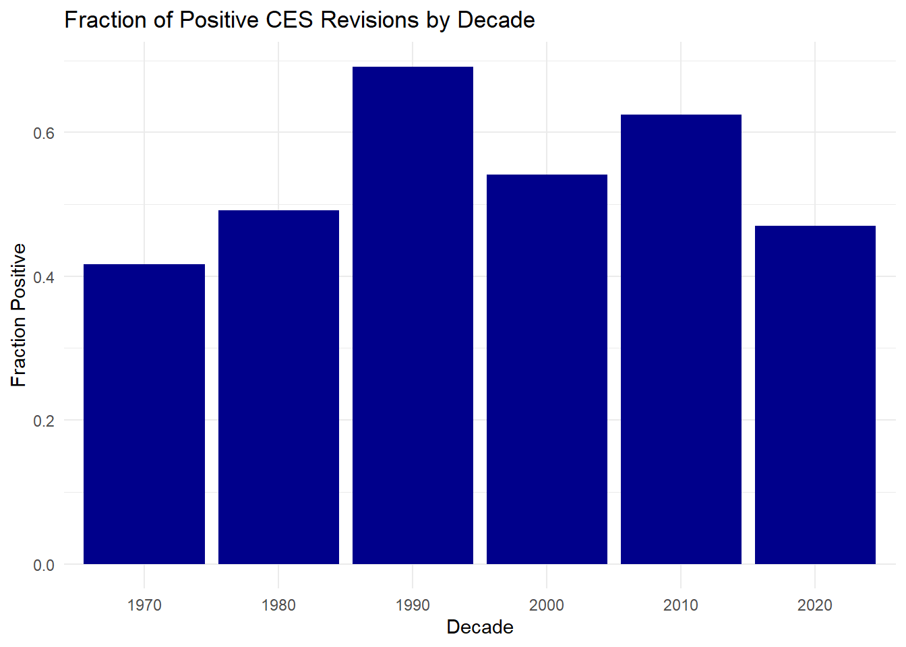

ces_analysis <- combined %>%mutate(year =year(date),month =month(date),abs_revision =abs(revision),rel_revision = abs_revision / final *100, pos_revision = revision >0 )# 1. Largest positive revisionlargest_pos_rev <- ces_analysis %>%slice_max(revision, n=1)# 2. Largest negative revisionlargest_neg_rev <- ces_analysis %>%slice_min(revision, n=1)# 3. Average absolute revision (overall)avg_abs_rev <- ces_analysis %>%summarise(mean_abs =mean(abs_revision, na.rm =TRUE))# 4. Average revision as % of final estimateavg_rel_rev <- ces_analysis %>%summarise(mean_pct =mean(rel_revision, na.rm =TRUE))# 5. Fraction of positive revisions per yearpos_frac_by_year <- ces_analysis %>%group_by(year) %>%summarise(frac_pos =mean(pos_revision, na.rm =TRUE))# 6. Average absolute revision per month (seasonal effect)avg_rev_by_month <- ces_analysis %>%group_by(month) %>%summarise(mean_abs =mean(abs_revision, na.rm =TRUE))#largest_pos_rev#largest_neg_rev#avg_abs_rev#avg_rel_rev#pos_frac_by_year#avg_rev_by_month################################################################################### 1. Time series of original vs final CES estimatesggplot(ces_analysis, aes(x=date)) +geom_line(aes(y=original, color="Original")) +geom_line(aes(y=final, color="Final")) +labs(title="CES Estimates: Original vs Final", y="Employment (thousands)", color="Estimate") +theme_minimal()

Code
# 2. Revisions over time (positive/negative)graph2 <-ggplot(ces_analysis, aes(x=date, y=revision, fill=revision>0)) +geom_col(show.legend=FALSE) +scale_fill_manual(values=c("red", "green")) +labs(title="CES Revisions Over Time", y="Revision", x="Date") +theme_minimal()graph2

Code
# 3. Distribution of revision magnitudes (% of final)ggplot(ces_analysis, aes(x=rel_revision)) +geom_histogram(bins=50, fill="steelblue", color="white") +labs(title="Distribution of CES Revision Magnitudes (% of Final Estimate)", x="% Revision", y="Count") +theme_minimal()

Code
# 4. Fraction of positive revisions by decadeces_analysis <- ces_analysis %>%mutate(decade = year - year %%10)pos_frac_by_decade <- ces_analysis %>%group_by(decade) %>%summarise(frac_pos =mean(pos_revision, na.rm=TRUE))graph1 <-ggplot(pos_frac_by_decade, aes(x=factor(decade), y=frac_pos)) +geom_col(fill="darkblue") +labs(title="Fraction of Positive CES Revisions by Decade", x="Decade", y="Fraction Positive") +theme_minimal()graph1

Code
ces_analysis <- ces_analysis %>%mutate(big =abs(rel_revision) >0.01,era2020 =if_else(year(date) <2020, "pre2020", "post2020") )#Has the frequency of large revisions (>1%) increased after 2020?counts <- ces_analysis %>%group_by(era2020) %>%summarise(big_count =sum(big, na.rm =TRUE),total =n() )#countspt <-prop.test(x = counts$big_count,n = counts$total,correct =FALSE)large.rev.p.val <- pt$p.value#Has the average revision increased post-2020?avg.rev.p.val <-t.test( revision ~ era2020,data = ces_analysis,var.equal =FALSE)$p.valueyr2018and2024 <- combined %>%filter(year(date) %in%c(2018, 2024)) %>%group_by(year =year(date)) %>%summarise(avg_final =mean(final, na.rm =TRUE),avg_revision =mean(revision, na.rm =TRUE) )#yr2018and2024
Reaction To the Firing of Dr. McEntarfer
The firing of Dr. McEntarfer by President Trump came to a surprise to many and was strong criticism on data collection and data analysis performed independent from the government. By many, this has been seen as a political move more so to combat the criticism President Trump has been under regarding his ability to recover the economy post-covid. Following the firing, Bill Beach, who Trump had previously had in the position, commented that the suggestion that McEntarfer rigged the jobs report portrayed a misunderstanding in the way the data is collected and handled within the bureau.
Bill Beach stated, “The totally groundless firing of Dr. Erika McEntarfer, my successor as Commissioner of Labor Statistics at BLS, sets a dangerous precedent and undermines the statistical mission of the Bureau.” This claim by Bill Beach appears to be mostly true as there do not appear to be any statistical irregularities to the handling of the job data particularly related to the revisions. Trump’s main gripe refers primarily to the revisions of employment numbers where the numbers show an under performance in making up job numbers during his presidency. When reviewing the number of revisions and their comparisons to the pre-COVID numbers, the p-value comparison for an increase in revisions or that of larger revisions comes larger than .05 (avg.rev.p.val = 0.4847; large.rev.p.val = 0.5247). There does not appear to be any irregularity as it pertains to the way in which the revisions were put together.
Code
graph1
When looking at this graph, we even find that the proportion of positive revisions are not irregular to that of any other decade to indicate any “cooking of the books” that Trump claims.
Jim Maybach(Fake Politician) additionally claimed that the revisions that were produced by McEntarfer were irregular compared to when Bill Beach acted as Trump’s head of labor statistics.
Code
yr2018and2024
# A tibble: 2 × 3
year avg_final avg_revision
<dbl> <dbl> <dbl>
1 2018 214. 12.3
2 2024 196. -20.1
This claim would show to be false while looking at the compared averages of the revisions. When looking at the difference, there is no significant difference nominally between the two. There is a directional difference that exists but that can be a cause of different factors. There is no significant numeric abnormalities as it pertains to the way that the numbers are revised to indicate a favoritism to exaggerate the numbers.
The bureau of labor statistics and most government data collecting departments are meant to remain bipartisan and the intention of data and statistics is to remain impartial and only produce what we can use to guage the state of the world around us. From the look of what McEntarfer’s work has shown, her firing could set a poor precedent that partisan bias can contribute to biasing future data collection or public opinion regarding the validity of what is collected in the future.